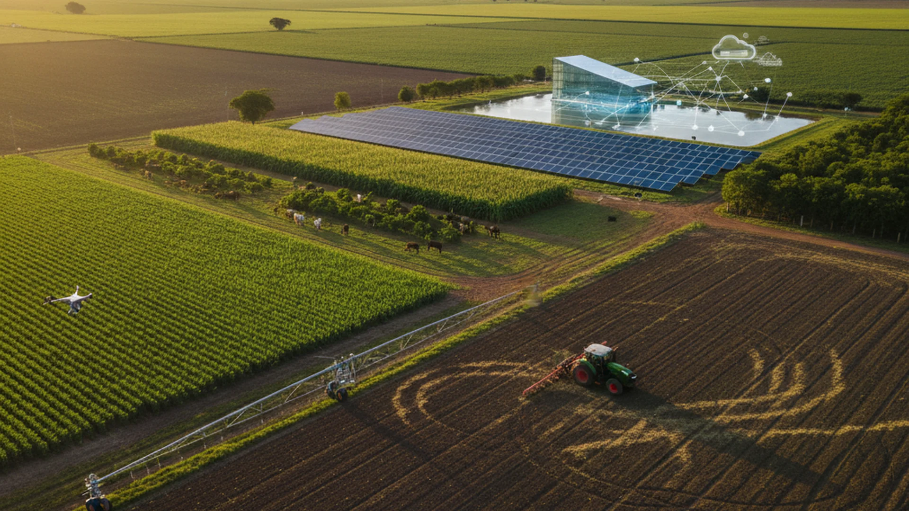

Resultados Reais no Campo
Conheça produtores que transformaram suas propriedades em modelos de sustentabilidade e lucro.
Fazenda Nossa Senhora Aparecida (Irmãos Fiorese)
Localizada em Goiás, a fazenda dos irmãos Kaio e Henrique Fiorese é um exemplo mundial de sustentabilidade. Ao adotar o projeto Bayer Forward Farming, eles integraram:
- Hotéis de Abelhas: Preservação de polinizadores nativos, descobrindo até uma nova espécie.
- Energia Solar: Redução drástica na pegada de carbono da operação.
- Certificação Internacional: Acesso a mercados premium que pagam mais por soja sustentável.

Fazenda Don Aro (Rondônia)
O pecuarista Giocondo Vale transformou sua propriedade em Machadinho d'Oeste em uma referência de Pecuária de Baixo Carbono utilizando o sistema ILPF.
- Recuperação de Pastagens: Áreas degradadas voltaram a ser altamente produtivas.
- Conforto Térmico: O plantio de árvores no pasto melhorou o bem-estar animal e a qualidade da carne.
- Sequestro de Carbono: A fazenda ajuda a mitigar as mudanças climáticas enquanto produz alimento.